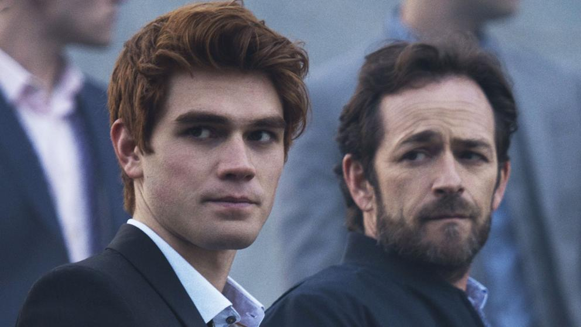

Series Televisivas
Riverdale
Riverdale es una serie de televisión de drama y misterio desarrollada por Roberto Aguirre-Sacasa y Greg Berlanti, basada en los cómics Archie creados por John L. Goldwater. Estrenó el 26 de enero de 2017 por The CW.2 En Hispanoamérica fue estrenada en Warner Channel el 26 de abril de 2017.
El 2 de abril de 2018, se anunció la renovación de la serie para una tercera temporada,3 que se estrenó el 10 de octubre de 2018.4 El 31 de enero de 2019, The CW renovó la serie para una cuarta temporada

Al mismo tiempo que un nuevo año escolar comienza, el pueblo de Riverdale aún está recomponiéndose de la reciente muerte de Jason Blossom en el río Sweetwater. Tras declarar la trágica muerte de su hijo como un asesinato, Clifford y Penolope Blossom, empiezan a sospechar de algunos de los ciudadanos de Riverdale. Los acontecimientos que han tenido lugar durante el verano, han hecho que Archie Andrews se dé cuenta de que él quiere seguir una carrera musical y no los pasos de su padre. Mientras tanto, Betty Cooper está ansiosa de ver a Archie, de quien está enamorada, después de haber estado fuera durante el verano; sin embargo, aún no está lista para revelarle sus verdaderos sentimientos.
Después de que el asesino de Jason finalmente fuera descubierto, otro terrible crimen ocurre y las vidas de Archie, Jughead, Betty y Veronica no volverán a ser las mismas. Después de lo ocurrido con Fred Andrews, Archie empieza a desconfiar de todo aquel que le rodea, incluso sus amigos. Jughead se acerca aún más a sus raíces, especialmente después de conocer a Toni Topaz. Betty se enfrenta a sus mayores miedos y a su propia oscuridad. Busca a su hermano Charles y descubre algo que no imaginaba, pelea con "Charles" hasta descubrir la verdad